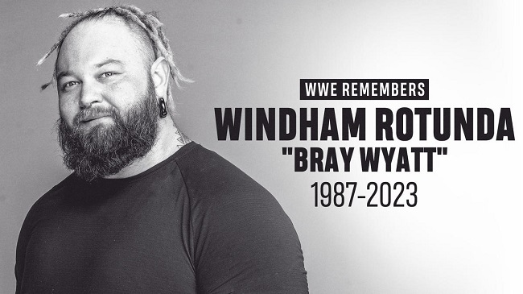

<!DOCTYPE html>
<html lang="en">
<head>
    <meta charset="UTF-8">
    <meta http-equiv="X-UA-Compatible" content="IE=edge">
    <meta name="viewport" content="width=device-width, initial-scale=1.0">
    <link rel="stylesheet" href="estilos2.css">
    <title>Original</title>
</head>
<body>
    
    <style>

        body{
            background-image: url("back/fire.jpg");
        }

    </style>


</body>
</html>


<body>
    
    <h1 class="titulo">WINDHAM ROTUNDA</h1>
    <p class="hola"> A mas de una semana del fallecimiento de WINDHAM</p>

    <section>
        <h2 class="des"> Solo 36 años de edad. Windham Lawrence Rotunda, conocido como Bray Wyatt, fue un luchador profesional estadounidense. 
            Es recordado por haber trabajado para la empresa WWE en dos etapas, la primera de 2010 a 2021, 
            y la segunda de 2022 hasta su fallecimiento en 2023
        </h2>
        <a href="index.html">  </a>
    </section>

</body>